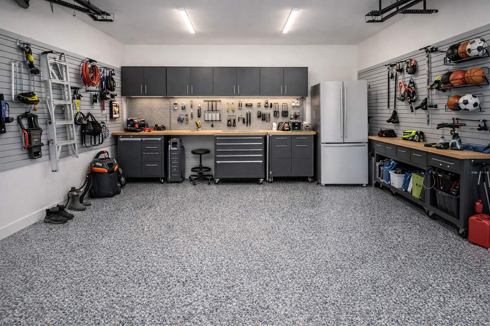

Slab Assessment
We inspect your slab for crack depth and type, spalling extent, oil contamination, moisture vapor emission, and existing coating adhesion. You receive an honest report and a detailed repair scope before we quote the coating work.


Fullerton’s older homes and tree-lined historic neighborhoods often have garage slabs that need more than a coat of paint - they need real concrete restoration. We repair the slab first, then apply the ArmorClad Industrial System for a finish that lasts.
Fullerton’s Unique Concrete Challenges
Fullerton is one of Orange County’s oldest cities, with neighborhoods like Downtown Fullerton, Sunny Hills, Amerige Heights, and the Raymond Hills historic district featuring homes built between the 1920s and 1970s. Garage slabs in these communities often have decades of natural settling - hairline cracks, spalling surfaces, control joint movement, and in some cases, serious structural deterioration that a coating alone cannot fix.
Garage Pros OC approaches every Fullerton project with restoration as the priority. Our diamond-grinding step reveals the true condition of the concrete. Our certified installers then perform comprehensive crack injection, spall rebuilding, and joint remediation before any coating is applied - ensuring that the ArmorClad system goes down on a sound, prepared substrate.
The result: a garage floor that looks entirely modern and performs like a commercial installation, while preserving the character and craftsmanship of your historic Fullerton home.
Get a Free Restoration AssessmentBungalow homes and Craftsman garages in and around downtown Fullerton often have original concrete slabs that require expert evaluation before coating. We handle the diagnosis and repair before any finish goes down.
Sunny Hills homes from the 1950s–70s era commonly show slab movement from Fullerton’s tree roots and soil conditions. We’ve restored dozens of Sunny Hills slabs before delivering a modern ArmorClad finish.
Raymond Hills’ hillside properties present concrete challenges unique to sloped terrain - drainage issues, slab separation, and joint widening. Our crew has the expertise to address all of these conditions.
Amerige Heights, Golden Hills, Acacia, Richman, Laguna Road - we serve every Fullerton neighborhood with the same expertise and the same ArmorClad system.
The Fullerton Restoration Approach
Most contractors apply a coating over damaged concrete and hope for the best. We don’t. Fullerton’s aged slabs require a methodical restoration approach before any coating can perform.
We inspect your slab for crack depth and type, spalling extent, oil contamination, moisture vapor emission, and existing coating adhesion. You receive an honest report and a detailed repair scope before we quote the coating work.
Industrial diamond grinding removes surface contamination and reveals the true condition of the concrete. This step often exposes damage not visible to the naked eye - which is exactly why it must come before any repair decisions.
Hairline cracks receive semi-rigid polyurea injection that moves with the slab. Spalled and pitted areas are rebuilt with cementitious repair mortar. Control joints are routed, cleaned, and filled with flexible joint compound. All repairs are ground flush before coating begins.
Once the slab is structurally sound and diamond-ground to CSP 3, we apply the full ArmorClad system - 100% solids epoxy base, decorative broadcast, and UV-stable polyaspartic top coat - for a finish that will serve your Fullerton home for a decade or more.
Historic Home Restoration
Fullerton homeowners who care about their historic properties don’t want a garage floor that looks out of place. The ArmorClad color system includes neutral, understated tones - warm greys, charcoal, sandstone, and classic solid colors - that complement original Craftsman, Mid-Century, and Ranch architecture without clashing.
We can also provide full-flake broadcast finishes in blends designed to complement wood trim and natural stone - so your restored garage floor feels like a deliberate design choice, not an afterthought.
Discuss Your Fullerton ProjectLearn Why We Do It This Way
Historic Fullerton homes often have aged, porous concrete with decades of contamination that acid wash cannot remove. Learn why CSP 3 diamond grinding is the only reliable prep method for older slabs.
Why Diamond Grinding MattersRestored Fullerton concrete deserves a coating that will last. Compare the full performance difference between 100% solids industrial epoxy and the big-box alternatives before making your decision.
DIY vs. Industrial Epoxy